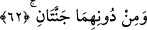
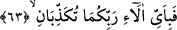

âhirette ulaşan nimetlerdir.
62. Bu ikisinden başka iki cennet daha vardır.
Allah’tan gereği gibi sakınanlar ve has kulları için vaad edilen bu iki cennetin altında,
diğer iki cennet de onların ötelerinde olan; amel defterleri sağ eline verilenler içindir.
Allah’tan korkanlar iki kısımdır; mukarrebûn ve ashab-ı yemîn ki bunlar mukarreblere
göre amel ve ilim üstünlüğü bakımından bir mertebe geride bulunurlar. Böyle olunca
“dûn” kelimesi, “başka” anlamına değil, yer ve makam bakımından “daha yakın”
anlamınadır. Bunun için önceki iki cennet, diğer iki cennetten üstündür. Mukarreblerin,
ebrârdan üstün oldukları gibi.
Denildi ki; “dûn” kelimesi “aşağı” anlamında değil, “yakınlık” anlamındadır. Yâni,
“bu iki cennetten Arş’a daha yakın ve ikisinden daha yüksek iki cennet daha vardır”
anlamındadır. Bazı müfessirler “gayrı,” “başka” anlamında da almışlardır.
Keşfü’l-esrâr sâhibi, önceki iki cennetin dışında diğer iki cennet daha vardır.
Bunlardan iki cennetin tabakları ve içindekiler gümüştendir. İki cennetin de tabakları ve
içindekiler altındandır. Cennet ehlinden olan her kadın ve erkek için de biri amellerinin
mükâfâtı, diğeri de kâfirlerden kendilerine kalan cennet olmak üzere ikişer cennet
vardır.
Kâşifî demiştir ki; zikredilen bu iki cennetten başka iki cennet daha vardır.
Denilmiştir ki birinci cennet altındandır ve önde olanlar/sâbikûn içindir. Bu iki cennet
ise gümüştendir ve ashab-ı yemîn içindir.
Denildi ki, daha iyi faydalanmaları ve cennetten cennete gidip gezinirken sevinçleri
katlanarak artması için dört yönde olmak üzere onların her biri için dörder cennet
vardır.
Dûn kelimesi; üzerlerinde, ikisinin sıfatları üzerinde, o ikisinin önünde, ikisinden
önce gibi anlamlara da gelir.
“Dûn”un “derece itibariyle aşağı anlamında” olduğunu Şeyh Necmüddin’in
Te’vîlat’ındaki sözü güçlendirmektedir: Orada faziletlerin iki cennetine işâret
edilmektedir; onlar sıhhatli ameller işler, doğru söz söylerler, değerli dereceleri gözler,
yüksek makam ve mertebeleri isterler. Yâni onlara zikredilen iki cennetten başka iki
cennet daha vardır. Onlar insanlıklarından fânî, O’nun lâhûtiyetiyle bâkîdirler.
63. Öyleyken Rabbinizin hangi nimetlerini yalanlayabilirsiniz?